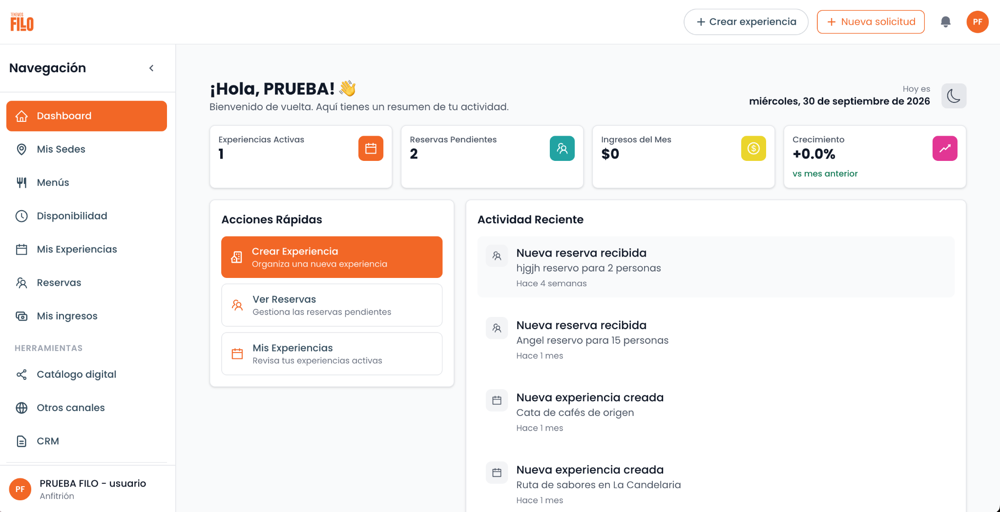
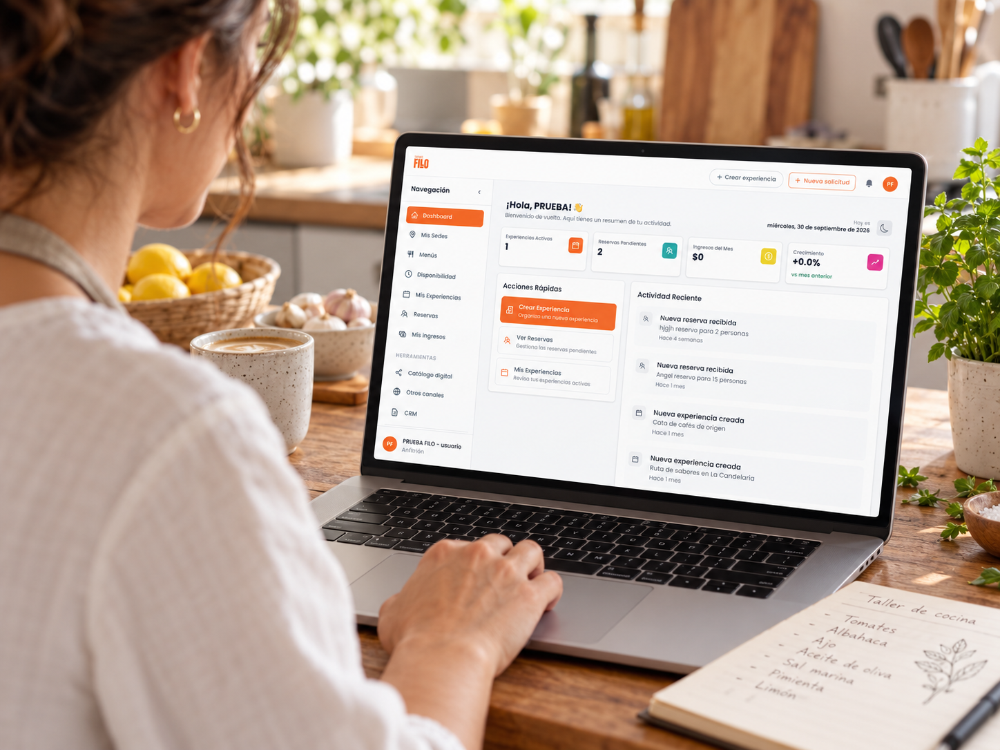
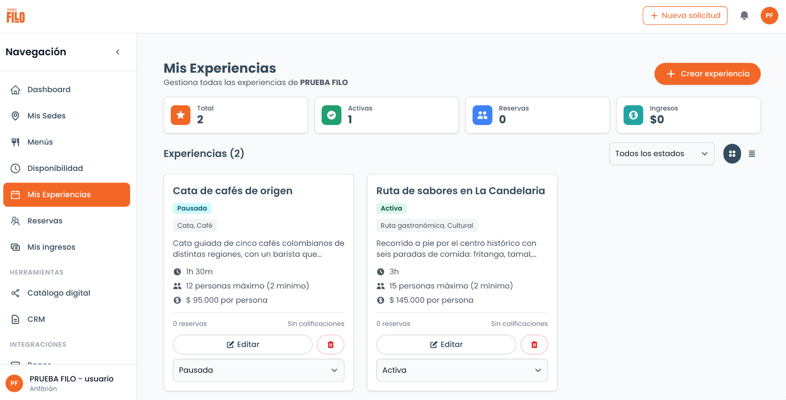
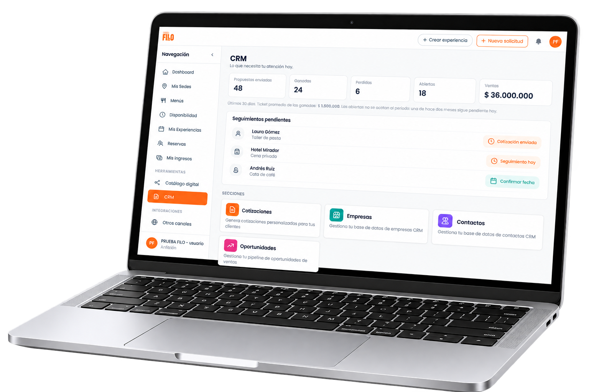
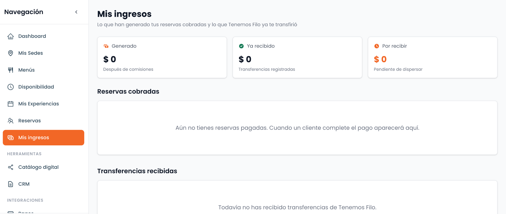
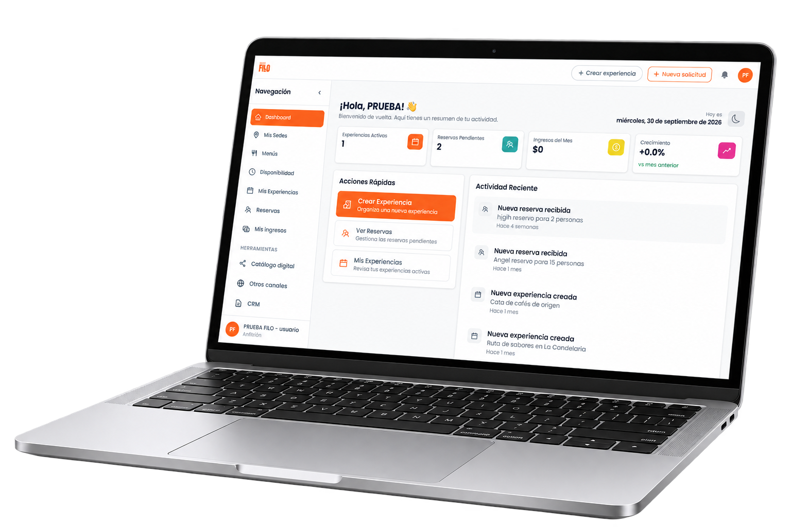
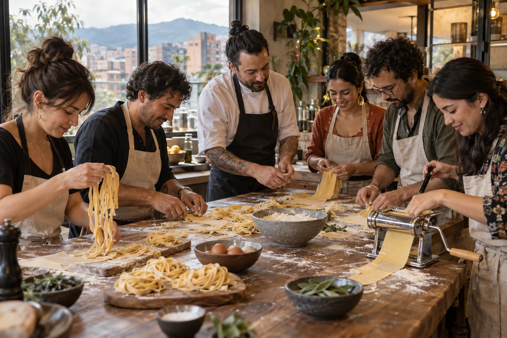

¿Quién viene?
Consulta tus próximas reservas.
Organiza tus reservas, haz seguimiento a tus clientes y conecta con nuevos canales de venta. Todo desde FILO.

Tus clientes siguen hablando contigo por WhatsApp o correo. Tú llevas sus oportunidades y reservas en FILO, con la información conectada para dar el siguiente paso.
Consulta tus reservas pendientes, ingresos del mes y actividad reciente para saber qué necesita atención.
Consulta tus próximas reservas.
Revisa pagos y abonos registrados.
Ten a la vista tus próximas ventas.
Tu negocio ya tiene información valiosa.
FILO te ayuda a tenerla a mano.

Pon tu operación en orden para recibir más consultas, darles seguimiento y convertirlas en reservas.

Experiencias, sedes, fechas y cupos organizados para saber qué puedes vender.

Ten claro quién está interesado, qué le ofreciste y cuándo volver a contactarlo.

Consulta tus ventas por experiencia, período y canal para decidir dónde poner tu esfuerzo.
Con la casa en orden, podemos abrir las puertas a más comensales.

Vende experiencias abiertas por cupos o gestiona reservas de grupos privados.

Taller de pastaCrea, cocina y comparte.Ver experienciaComparte el link de tu catálogo para que tus clientes consulten disponibilidad, reserven y paguen desde ahí. Los cupos se actualizan en tiempo real con cada reserva.
Recorrido por el centro histórico con seis paradas de comida y guía local.
Prepara cotizaciones a la medida, haz seguimiento y confirma cada reserva con la fecha, el número de personas y las condiciones acordadas.
Mira qué oportunidad necesita atención y cuál es el siguiente paso. FILO conecta clientes, cotizaciones y reservas, y automatiza seguimientos para ayudarte a cerrar más ventas.
Una propuesta enviada. Un seguimiento pendiente. Una oportunidad de volver a conversar.
Hay marketplaces y distribuidores que buscan experiencias como la tuya. Conecta tu oferta con canales de venta y administra sus reservas desde un único portal.
Tu información, tu experiencia y tu manera de vender. FILO te ayuda a ponerlas en orden.
Nuestro agente IA convierte la información de tu web o documentos en experiencias. Tú revisas y les das el toque final.
Define horarios y cupos para que tus clientes encuentren cuándo vivir tus experiencias.
Lleva tu catálogo a redes, clientes y revendedores conectados. Las reservas utilizan la misma disponibilidad.
Tú sigue creando experiencias increíbles. FILO te ayuda a organizar lo que pasa antes y después.
$79.000 COP + IVA / mes
Durante tus primeros tres meses.
Pago mensual. Sin permanencia.
Regístrate hasta el 31 de diciembre de 2026.
Comisión del 3% en reservas abiertas vendidas por el checkout o link, o por canales conectados. Las reservas privadas y manuales no generan esta comisión.
Tus tres ciclos completos al precio de lanzamiento. Después eliges tu plan; no hay un cuarto cobro automático sin tu elección.
FILO nace de años trabajando con anfitriones gastronómicos. Conocemos las preguntas, los cambios y los pendientes que acompañan cada reserva. Por eso conectamos tu operación en un solo lugar.
FILO está creado para anfitriones de experiencias gastronómicas: talleres de cocina, catas, cenas y otros encuentros alrededor de la comida y la bebida. Otros creadores de experiencias también pueden utilizarlo, aunque nuestro enfoque es gastronómico.
No. Puedes crear tus experiencias dentro de FILO y compartir sus enlaces directamente con tus clientes o en tus redes. Para tus experiencias abiertas, los clientes pueden consultar disponibilidad, reservar y pagar.
No. Si ya tienes la información en tu web o en documentos, nuestro agente IA te ayuda a convertirla en experiencias dentro de FILO. Tú revisas los detalles y les das tu toque final.
Sí. Sigue conversando con tus clientes por WhatsApp, correo o los canales que ya utilizas. Registra en FILO esas oportunidades y reservas para llevar el seguimiento sin tener que buscar toda la historia entre mensajes.
Sí. Puedes vender cupos para experiencias abiertas con fechas y horarios definidos, o gestionar solicitudes privadas con cotizaciones y seguimiento comercial. Ambas quedan dentro de la misma operación.
Sí. Puedes compartir tus experiencias en redes y con tus clientes, y recibir ventas de revendedores conectados a FILO. Las reservas de esos canales utilizan la misma disponibilidad para que mantengas el control de tus cupos.
Puedes conectar tu propia pasarela de pagos para recibir el dinero directamente de tus clientes y hacer seguimiento desde FILO. Si cobras por transferencia u otro medio, también puedes registrar esos pagos dentro de la reserva.
En esta etapa ofrecemos acceso a todas las funcionalidades actuales por $79.000 COP + IVA al mes durante tus primeros tres meses, en lugar de una prueba gratuita de pocos días.
Pagas mes a mes, sin adelantar los tres meses. Si te registras hasta el 31 de diciembre de 2026, recibes tus tres ciclos mensuales completos a precio de lanzamiento, incluso si empiezas en diciembre.
Podrás conocer los planes disponibles y elegir el que mejor se ajuste a tu negocio. No haremos un cuarto cobro automático con un plan que no hayas elegido.
Sí. No tienes permanencia. Si cancelas, conservas el acceso hasta que termine el período mensual que ya pagaste.
Sí. FILO cobra un 3% por la gestión y automatización de las reservas abiertas vendidas a través de su checkout o link, o de canales de distribución conectados. Las reservas privadas y las registradas manualmente no generan esta comisión.